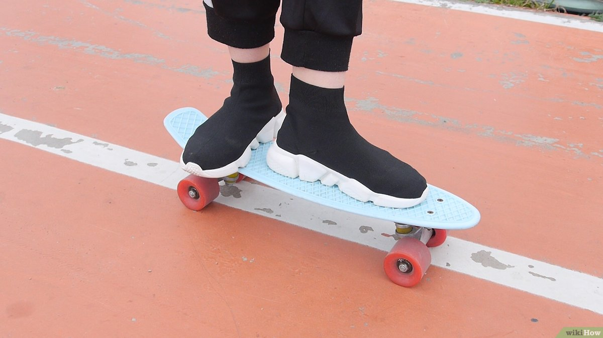
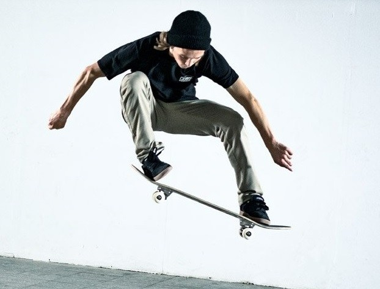
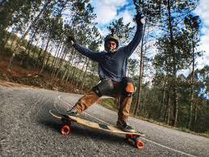

|
Skate, en inglés, es el acortamiento de la palabra skateboard, que puede traducirse como monopatín, patín o patineta. Como tal, skate puede referirse a un tipo de vehículo compuesto por una tabla de madera con los extremos levantados, con cuatro ruedas y dos ejes, con la cual se practica el deporte del skateboarding. Es visiblemente más pequeña que el longboard. Asimismo, to skate es un verbo para referirse a la acción de patinar. |
Penny boardLas Penny boards, como son conocidas, son patinetas de plástico que utiliza trucks y ruedas de cruiser (más gruesas que las normales), por lo que también se les llega a decir “short cruisers” |
SkateboardEl monopatín, también conocido como patineta, skateboard o tabla de patinaje, es un vehículo que consiste en una tabla de madera con cuatro ruedas en pareja que sirve para practicar el deporte llamado skateboarding. Para usarlo se debe montar de pie encima de él. Cada par de ruedas tiene un eje (truck) que se sujeta con un vástago flexible ligeramente inclinado a la tabla, lo que permite hacer giros por inclinación de la tabla a un lado o a otro, y el movimiento de giro suave de los ejes que conlleva. La tabla o monopatín sirve para hacer saltos y distintos tipos de trucos (tricks), como por ejemplo: kickflips, ollies, 180º y otros. |
Long-boardEl longboard, o tabla larga, es un deporte que surgió en los años 1960-1980, en el que se emplea una tabla larga (en inglés, longboard), con mayor longitud de lo habitual. Los longboards se utilizan comúnmente para bajar cuestas, en carreras que se llevan a cabo en todo el mund |
|  |  |  |